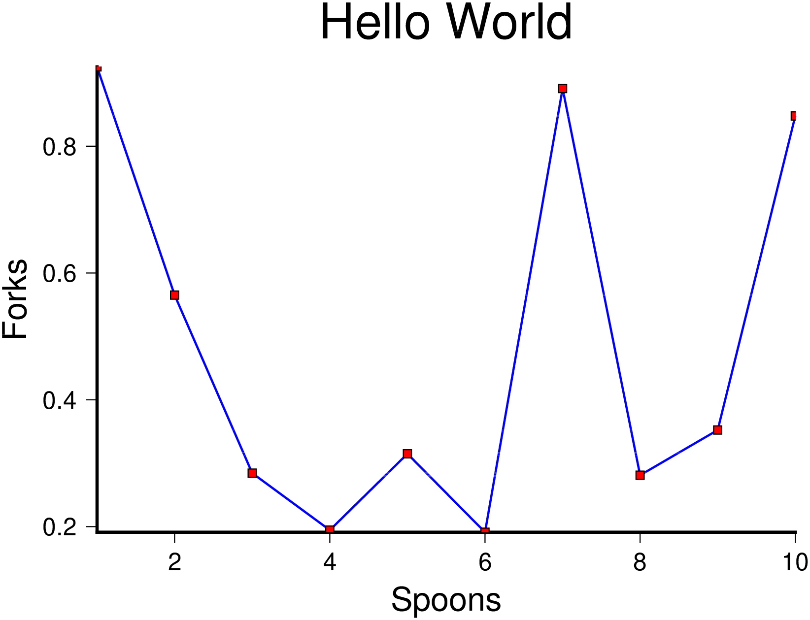

Examples
Here's the "Hello World"
using GMT
plot(collect(1:10),rand(10), lw=1, lc="blue", fmt="png", marker="square",
markeredgecolor=0, size=0.2, markerfacecolor="red", title="Hello World",
x_label="Spoons", y_label="Forks", show=true)
A few notes about this example. Because we didn't specify the figure size (with the $figsize$ keyword) a default value of 12x8 cm (not counting labels and title) was used. The $fmt="png"$ selected the PNG format. The $show=true$ is needed to show the image at the end.
But now we want an image made up with two layers of data. And we are going to plot on the sphere (the Earth). For that we will need to use the $pscoast$ program to plot the Earth and append some curvy lines.
And the "Hello Round World"
x = linspace(0, 2pi,180); seno = sin.(x/0.2)*45;
pscoast(region="g", proj="A300/30/6c", frame="g", resolution="c", land="navy",
fmt="png")
plot!(collect(x)*60, seno, lw=0.5, lc="red", fmt="png", marker="circle",
markeredgecolor=0, size=0.05, markerfacecolor="cyan", show=true)
Note that now the first command, the $pscoast$, does not have the $show$ keyword. It means we are here creating the first layer but we don't want to see it just yet. The second command uses the ! variation of the $plot$ function, which means that we are appending to a previous plot, and uses the $show=true$ because we are donne with this figure.
Color images
Color images are made with $grdimage$ which takes the usual common options and a color map. It operates over grids or images. The next example shows how to create a color appropriate for the grid's z range, plot the image and add a color scale. We use here the $data$ keyword to tell the program to load the grid from a file. The $@$ before the tut_relief.nc file name instructs GMT to download the file from its server on the first usage and save it in a cache dir. See the GMT tuturial for more details about what the arguments mean.
topo = makecpt(color="rainbow", range="1000/5000/500", continuous=true);
grdimage(data="@tut_relief.nc", shade="+ne0.8+a100", proj="M12c", frame="a", fmt="jpg",
color=topo)
psscale!(position="jTC+w5i/0.25i+h+o0/-1i", region="@tut_relief.nc", color=topo,
frame="y+lm", fmt="jpg", show=1)
Perspective view
We will make a perspective, color-coded view of the US Rockies from the southeast.
grdview(data="@tut_relief.nc", proj="M12c", JZ="1c", shade="+ne0.8+a100", view="135/30",
frame="a", fmt="jpg", color="topo", Q="i100", show=1)